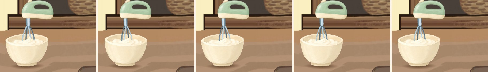
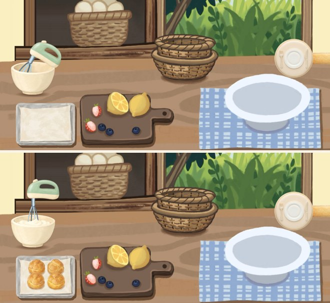
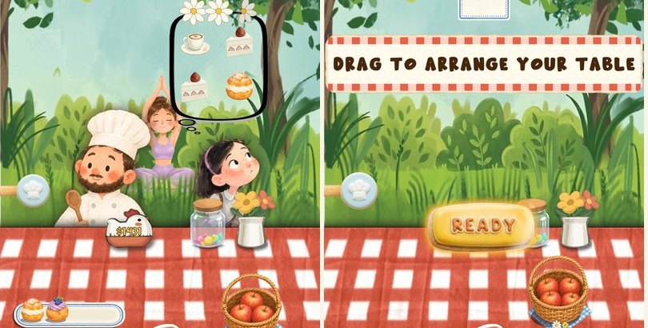
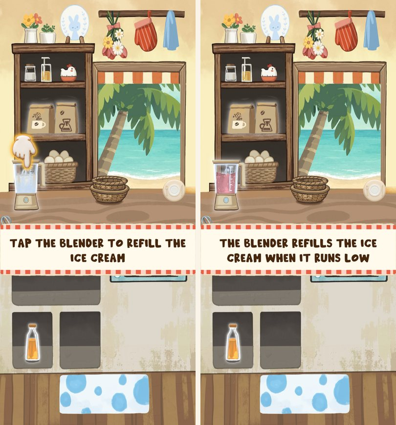

Food Truck Cafe
21 November. 2026.11.20 is live on the App Store; test build 2026.11.21 (1) is in TestFlight.
1Next
You
Analysis: players of 22 and 23 November, with three ad choices to tick. The US player finished all 28 days; a second keen player (Philippines) reached chapter 2; no purchase yet.
Current: the whisk while running (three choices), the larger mixer set, the small fixes with your changes of today (banner back, hand moving, ice cream undone).
Still open: the chapter 2 ideas and the store page's Header pictures (Q&A); the winter scene drafts (C chapter tab).
Me
Report cleaned: your ticked items are out (the chef stays locked). Nothing of 22 and 23 November is in a test build; say "build" when you want one.
Early December: look at Unity's Finance page for November's balance.
2Q&A
Chapter 2 is much harder: ways to tune it (21 Nov)
- The data agrees. The player from Japan got mostly 3 stars in chapter 1; in chapter 2 they got 0 stars on day 13 and needed 2 to 5 tries on each of days 15 to 19. All 11 of their restarts were in chapter 2. Your own test today: one star on day 13 and on day 14. (Today's US player got 3 stars on both, so it can be done, but not by most.)
- Why: customers come at the same pace as chapter 1, but an ice cream is up to four taps, and the scoops and waffle bowls run out fast (4 scoops a well), so the kitchen trips pile up.
Ideas (tick any; my pick is 1, 2 and 3: make the ice cream lighter, leave the customers alone):
What are "Header" and "Search Results" on the release page? They are empty for our game.
- They are new, optional slots from Apple ("creative assets", shown from iOS 27): a picture or short looping video at the very top of our store page (Header), and a picture shown beside the game in search (Search Results).
- Empty is fine: the page looks as it does now, and search keeps showing our video and screenshots. Nothing is missing from the release.
- They are a chance to look better: one clear picture of the truck and the table, no prices, readable small. Apple gives templates with safe areas. They go through review like screenshots.
The sale price of each item
- Chapter 1: coffee $10, bread $15, apple $20, juice $20, cookies $30, strawberry cake $35 a slice, choux $35.
- Chapter 2: coconut $30, ice cream $15 per scoop (a three-scoop glass is $45).
- Plus a tip: price × seconds left on the order × 10 % (some customers tip more). A $30 order served with 6 seconds left pays $18 in tips.
- A replayed day pays only part of this (unchanged).
The time for each item after the kitchen redesign (21 Nov)
- Bread: 5 s in the oven.
- Cookies: 3 s in the oven.
- Choux: about 9 s from the oven tap to the table: oven 3 s, mixer 2.5 s, fruit board 2 s, shown finished 0.9 s, flight 0.6 s. No taps after the oven.
- Strawberry cake: the same, about 9 s.
- Choux and cake share the mixer and the board: if both are cooking, the second waits its turn (up to 2.5 s more).
- Apples and coconuts: back 8 s after the last one is picked.
- Ice cream blender: 3 s with four flavours, 1.8 s with two.
- Waffle machine: about 2.4 s.
- Coffee bags, juice: at once.
- With the Kitchen upgrade (15 stars) all of it is a quarter shorter: bread 3.8 s, cookies 2.3 s, choux and cake about 7 s.
3Current
Made 21 to 23 November, after test build 2026.11.21 (1). Not in a test build yet.
The whisk while the mixer runs.

- Why it looks slim: the spin is drawn by squeezing the whisk's width, three turns a second, down to about a fifth of its width. So most moments show it narrower than your whisk; only now and then at full width.
- Its lower part is also inside the cream, deeper since your last note.
Mixer set larger.

- The whole set is 9 % larger again (22 % over the first size); its arranging box grew with it. It still fits the counter's left end beside the tray.
- Running, it sits lower: the whisk goes deeper into the cream.
Small fixes.

- Pull handle (table and kitchen): 12 % bigger, knob, stick and the area that takes the tap.
- EARNED line in the shop: the same letters and dark brown as the "DAILY TREATS" title.

- Blender in the chapter 2 tutorial is a step to do: the hand points at it, the tutorial waits for the tap, then the blender runs and the wells fill.
- Tutorial hand: it moves up and down clearly now (about twice as far as before, and a little quicker), on every step it points at.
- "Drag to arrange your kitchen": back at its earlier place over the counter's opening. It never shows in the chapter 2 tutorial now (it could, when chapter 2 was reached without ever arranging, as with the test button).
- Ice cream in the wells: my change is undone; the pictures are the earlier ones again.
4MVP
Next release: the kitchen remodel and the small fixes. Everything changed since release 2026.11.20:
- Kitchen flow: choux and cake are made in steps. The oven bakes them onto the baking tray or the cake plate in the kitchen, the mixer adds the cream, the fruit board adds the fruit, then they fly to the table. The kitchen does every step by itself, with no pause.
- New kitchen pieces: the baking tray (four choux, two by two, four stages, with a shadow), the cake plate's stages (empty, sponge, cream, finished), the lean handheld mixer with its bowl and the kitchen's whisk as its blade (at rest and running). All can be arranged; the tray starts on the kitchen table and always lies fully on its top.
- Kitchen times: bread bakes 5 s; choux, cake and cookies 3 s. The ice cream blender runs 3 s (1.8 s with two flavours). Pausing the game stops the kitchen too.
- Chapter 2 opens after day 9 of chapter 1 (the player chooses when to go). On the map day 9 is a big glowing star with a dotted path to the arrow; finishing it gives a star and the truck drives to chapter 2.
- Chapter 2, first day: every ice cream is a waffle bowl with one or two scoops; normal orders from the second day.
- Chapter 2 gift: a fourth patience flower for every chapter 2 customer; in the tutorial a reward card shows it and it flies to the first customer.
- Map: today's day card opens by itself.
- Customers: they think for 2 s (three dots in the middle of the bubble) before the order shows.
- Tutorial: the pointer is a hand cookie with a gold glaze glow.
- Shop: NEW on a tab that holds something new; locked items stay visible with a padlock (cookies and coconut until chapter 2, the star Yoga until she is hired); two new locked star cards, Chef (20) and Dining table (25); cards aligned; the extra cup reads "One more plate for brewed coffee."
- Look: a taller hen on the table; the tutorial's "Ready to go?" card on paper with cookie buttons.
Since test build 2026.11.21 (1): pull handles 12 % bigger; the shop's EARNED line in the Daily Treats letters; the chapter 2 tutorial waits for a tap on the blender; the tutorial hand moves up and down; no arrange banner in the chapter 2 tutorial; the mixer set larger, its whisk deeper in the cream.
Not in yet: the chapter 2 tuning (your picks); a sound for the day 9 scene.
5Backlog
Nothing open.
6Analysis
Players, 22 and 23 November (everything since the evening of 21 November; times are ours; read 23 November, about 9:00).
- 8 new players, all from Asia (Philippines 2, China 2, Vietnam, Cambodia, Pakistan, Indonesia): opened 8, started the tutorial 7, finished it 5, finished day 1: 4, went on to day 2: 1.
- Day 1, the same picture as before: three of the four got 2 stars and left within a minute or two of the day's end; the one who got 3 stars stayed. Over the last three days: 7 new players finished day 1; the 5 with 2 stars all left right there, the 2 with 3 stars both played on into chapter 2. The first between-days ad plays at that same moment.
- A second keen player (Philippines, new on 23 Nov, 01:21 to 05:42 in four visits): days 1 to 12, 3 stars on eleven of them, 23 things bought (all foods, all staff, both ovens, two star cards, cookies, coconut, ice cream upgrade), now on day 13, chapter 2's first day. Ads worked in every visit: 12 between-days ads (2 watched to the end, 10 skipped) and 1 Daily Treat ad.
- The US player finished the game: a third visit on 21 Nov, 17:44 to 18:10: days 23 to 28, 3 stars on each. About an hour and a half of play for all 28 days. Not seen since.
- Their ads again: in that third visit Unity got no ad request at all from them (none in those two hours), like in their first visit. So two of their three visits had no ads; only the second showed them (8). This fits ads failing to start on some launches and the game not trying again. At US ad prices those two visits were worth more than a normal day of ours.
- Chapter 2 is still too hard for the Indonesian player (an older version): back on 22 Nov, 0 stars on day 17, 0 stars on day 13, left day 13 half way.
- Other returns: a US player on an older version played half an hour on 21 Nov evening: days 1 to 6 with 0 stars each, then day 1 ten more times (1 to 3 stars). A Malaysian player came back, watched a Daily Treat ad to the end and played day 2 twice (2 stars). A new Pakistani player finished the tutorial, watched a Daily Treat ad, and did not start day 1.
- Unity Ads (UTC days): 22 Nov: 13 requests, 9 shown, $0.12. 23 Nov so far: 52 requests, 17 shown, $0.01: ads shown in the Philippines pay under a tenth of US ones. Last seven days: $0.57.
- Downloads (Apple, first time): 21 Nov 6, 22 Nov 8; the seven days to 22 Nov: 59 (37 the week before). No purchase yet (no Remove Ads, no Stars).
What I would do (the first two got stronger with these two days):
7Marketing
Nothing open.